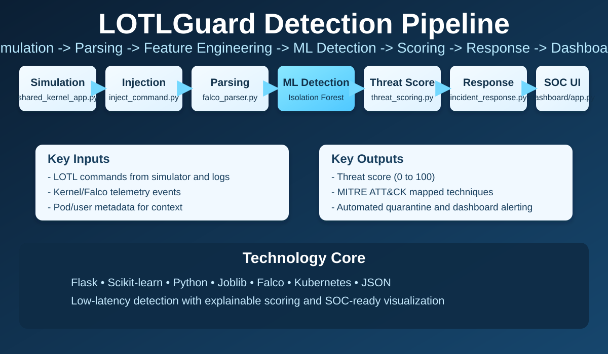

Objective
- Detect LOTL command misuse in real time with behavioral and anomaly signals.
- Correlate events with threat scoring and MITRE ATT&CK mapping.
- Provide SOC dashboard for incidents, topology, and attacker geolocation.

School of Computing
Coimbatore Campus, Amritanagar P.O., Ettimadai, Coimbatore - 641 112, Tamil Nadu
Cybersecurity Project Showcase
ML-Driven Real-Time SOC Dashboard with MITRE Mapping, Quarantine, and Incident Response
Scan Repo
Organized pipeline view from event generation to SOC response and containment.

 Flask REST API
Flask REST API Scikit-learn
Scikit-learn Isolation Forest
Isolation Forest K8s Monitor
K8s Monitor Forensic JSON
Forensic JSON Project Repo
Project Repo